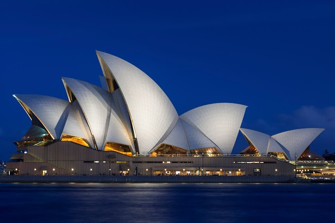

Abella | 9min read | 21-11-2023

Sydney, Australia's largest and most iconic city, is a captivating blend of natural beauty and cosmopolitan charm. Its stunning harbor, home to the famous Sydney Opera House and Harbor Bridge, sets the stage for a bustling metropolis with diverse neighborhoods, world-class dining, cultural attractions, and pristine beaches.
Historical Perspective: Sydney's Journey Through Time
Sydney's history is a tapestry of indigenous heritage, European colonization, and the development of a modern metropolis. The indigenous people of Sydney, known as the Eora, have a history dating back over 30,000 years. The first European settlement in Sydney was established in 1788 by the British, making it one of the earliest European settlements in Australia. The city's growth was significantly influenced by its role as a British penal colony. The Sydney Harbor served as the gateway to Australia for British convicts, and the city's historical landmarks such as the Rocks and Hyde Park bear testament to this era.
Cultural Diversity: Sydney's Multifaceted Society
Sydney is a melting pot of cultures and ethnicities. With a population hailing from diverse backgrounds, the city offers a rich tapestry of cultural experiences. Neighborhoods like Chinatown, Little Italy in Leichhardt, and the Indian enclave of Harris Park provide authentic culinary experiences. The annual Sydney Mardi Gras, a celebration of LGBTQ+ culture, attracts participants and spectators from around the world. The city's vibrant arts scene, with institutions like the Art Gallery of New South Wales and the Museum of Contemporary Art, showcases a wide range of artistic expressions.
Natural Beauty: Sydney's Scenic Wonders
Sydney's natural beauty is unparalleled. The city is flanked by the Pacific Ocean to the east and the Blue Mountains to the west, offering an array of outdoor activities. Sydney's beaches, including Bondi, Manly, and Coogee, are world-famous for their golden sands and excellent surfing conditions. The coastal walk from Bondi to Coogee is a scenic delight, with breathtaking views of the ocean and coastal cliffs. Inland, the Blue Mountains National Park provides opportunities for bushwalking, hiking, and exploration. The Royal Botanic Garden in the heart of the city is a serene oasis of lush greenery.
Iconic Landmarks
Sydney Opera House and Sydney Harbour Bridge stand as emblematic symbols of the city. The Opera House, with its unique sail-like design, hosts world-class performances, while the Harbour Bridge offers breathtaking views and the opportunity for the daring to climb its arches.Sydney, a city adorned with timeless landmarks, boasts the iconic Sydney Opera House, a UNESCO World Heritage Site characterized by its distinct sail-like architecture, hosting world-class performances against the stunning backdrop of Sydney Harbour. The Sydney Harbour Bridge, an engineering marvel, offers panoramic views and the thrill of the BridgeClimb experience.